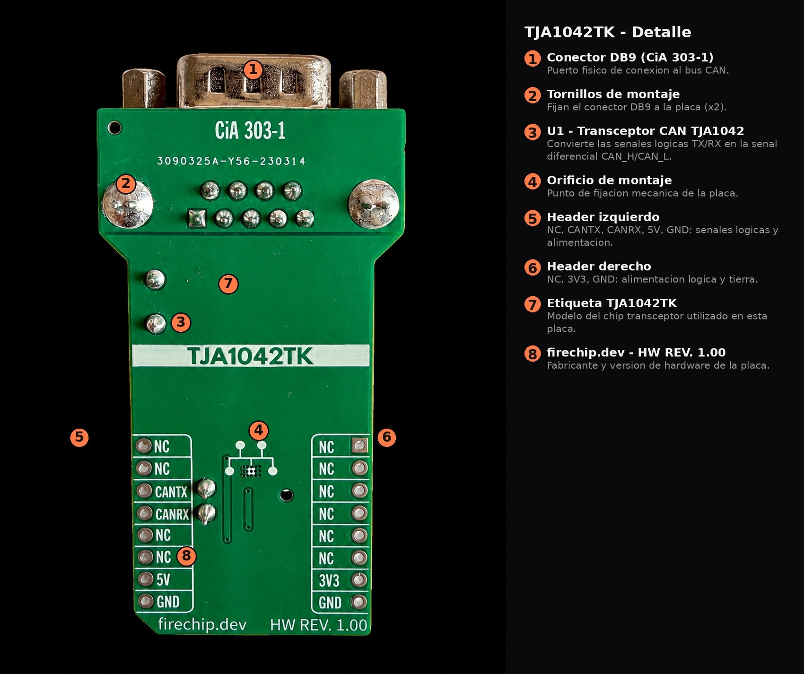
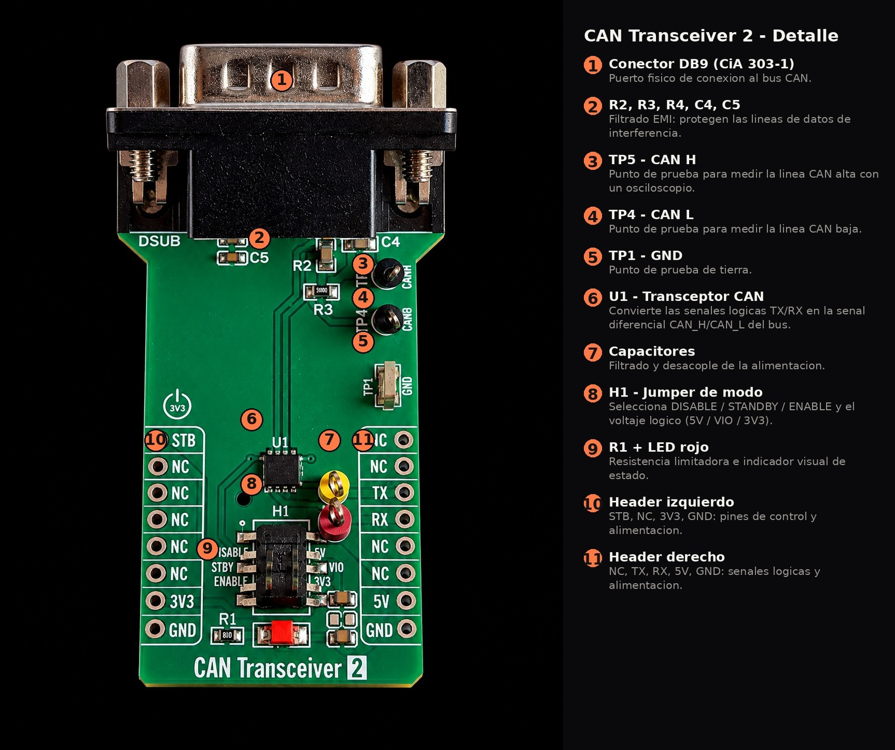

La interfaz entre tu controlador y el bus CAN
Basado en el TJA1042 de NXP, transceptor CAN de alta velocidad de tercera generacion. Conector DB9 con pinout estandar CiA 303-1, listo para integrarse en redes CAN industriales y automotrices.

El chip TJA1042 cumple ISO 11898-2:2016 y SAE J2284-1 a J2284-5, con muy bajo consumo en modo standby (wake-up por host o por bus), deteccion de subtension en VCC y VIO, proteccion termica, y comportamiento pasivo en el bus cuando el modulo no esta alimentado. Los pines de bus soportan hasta 58V de robustez ante transitorios automotrices.
Donde encaja este modulo
PLCs, sensores y actuadores comunicados por bus CAN en planta.
Lectura y depuracion de redes CAN de vehiculos (OBD, ECUs).
Comunicacion entre controladores de motor y unidades de control.
Prototipado de nodos CAN para microcontroladores propios.
El modulo desde todos los angulos




Pinout
| Pin | Funcion |
|---|---|
| CANTX | Entrada de transmision (logica, hacia el transceptor) |
| CANRX | Salida de recepcion (logica, desde el transceptor) |
| 5V | Alimentacion VCC |
| 3V3 | Referencia / alimentacion logica |
| GND | Tierra |
| NC | Sin conexion (resto de pines del header) |
| Pin | Funcion |
|---|---|
| STB | Standby: entra en modo de bajo consumo |
| TX / RX | Logica de transmision y recepcion |
| 5V / VIO / 3V3 | Alimentacion y referencia logica seleccionable |
| Jumper H1 | DISABLE / STBY / ENABLE: selecciona el modo de operacion |
| GND | Tierra |
| Pin DB9 | Senal |
|---|---|
| 2 | CAN_L |
| 3 | GND |
| 7 | CAN_H |
Guia para fotografiar el producto
Para que cualquier fotografo que se incorpore al equipo mantenga el mismo estandar visual:
- Fondo blanco liso. Cartulina o papel blanco curvado (infinity curve) para que no se vea el borde entre mesa y fondo.
- Deja margen alrededor. El producto no debe tocar los bordes del encuadre; deja fondo visible en las 4 direcciones para que el recorte digital funcione bien despues.
- Toma cenital. Camara perpendicular a la placa, directamente desde arriba, sin distorsion de perspectiva.
- Dos luces difusas a 45 grados. Nunca usar el flash directo: crea sombras duras y brillos en los componentes metalicos.
- Tripode o apoyo firme. Evita el desenfoque por movimiento de la mano al presionar el boton.
- Varios angulos: vista frontal, vista 3/4 mostrando el conector DB9, y un acercamiento a los jumpers de control.
- Revisar antes de subir. Buscar sombras duras o reflejos en superficies metalicas y corregir la iluminacion si aparecen.
Contacto
Escribenos si tienes preguntas sobre este modulo o quieres cotizar unidades.